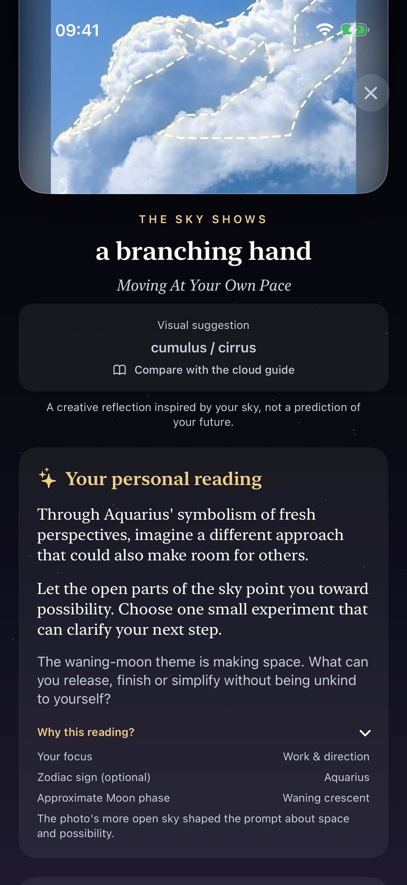
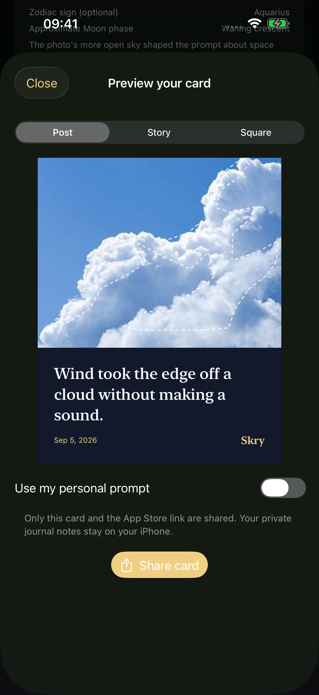

Notice a sky.
Keep a thought.
Your own sky photo, a personal reflection, and a quiet place to return to it.
Explore Skry on the App StoreFor iPhone · A free daily reading · Optional Skry+ and reading credits
Make it your own in Skry 1.5
Choose a focus — relationships, work, rest or an open perspective. Add a zodiac sign if you like. Your photo and the approximate Moon phase help shape a creative prompt, with an explanation of the inputs.
These are symbolic perspectives for reflection, not predictions about your future or personality.
See what you will make
Actual Skry 1.5 screens with a demonstration reading. Open an image to see the full-size screen.
{kind=link}

{kind=link}

A moment with somewhere to go
- Photograph the sky or choose a photo. Analysis stays on your iPhone.
- Read, then add your own private note. Your journal keeps the photo and its original reading together.
- Compare your observation with a guide to the 10 main cloud genera. “Not sure” is a valid observation; automatic suggestions may be wrong.
- Preview a post, story or square card. Share your chosen card and an App Store link, while private notes stay private.
Keep it personal
No account, birth time, birth date or location is required. Skry writes readings on your device and does not upload your photo or preferences. Sharing only happens when you choose it.
Start with the free daily reading
The first successful reading each day is free. The personal reflection, observation guide, journal notes and sharing are included. Skry+ adds unlimited readings, all reading sections and the option to remove the card signature. Credits offer an alternative without a subscription.
The App Store shows current prices, trial eligibility and availability before purchase. Subscriptions renew automatically unless canceled. Skry is for reflection and entertainment; its suggestions are not weather forecasts or safety advice.
Göğe bak. Bir düşünceyi sakla.
Kendi gökyüzü fotoğrafın, kişisel bir yorum ve tekrar dönebileceğin sakin bir günlük. Skry 1.5 ile odak ve isteğe bağlı burç seçimi, 10 bulut cinsini karşılaştırma rehberi, özel notlar ve gönderi, hikâye, kare paylaşım kartları kullanımına hazır.
İlk başarılı günlük okuma ücretsizdir. Yorumlar sembolik düşünme önerileridir; gelecek tahmini değildir. Fotoğrafın ve tercihlerin cihazında kalır; paylaşım kararını sen verirsin.
Start with your own sky.
Your first successful reading each day is free. Take a photo, keep your reflection, and share only if you choose.
Get Skry on the App StoreHer gün ilk başarılı okuma ücretsiz. Gökyüzünü fotoğrafla, düşünceni sakla; dilersen paylaş.
© 2026 Berke Kahraman